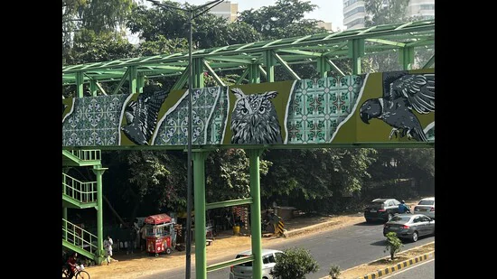

Dharya Gambhir, the artist behind the mural has transformed the dilapidated bridge as part of a street art project.
It’s not just to prep for winter months that birds are flocking the city, they now have a new launch pad — the newly-painted foot-over bridge near Qutub Plaza market of Gurugram Phase-1. So, the next time you pass by it, take a moment to soak in its scenic beauty
The artist behind the mural, Dharya Gambhir, has transformed the dilapidated bridge as part of a street art project. “In six years, I’ve done multiple murals in and around Delhi,” he says, adding, “I chose the birds of Aravalli that exist in the habitat of Gurugram, as I wanted to make the mural more informative about their existence. For people living in the area and those crossing that bridge, this work of art will bring a sigh of relief. The tile pattern green colour used in this mural is adopted from the architectural forms and floral patterns present in the locality.”
“This foot-over bridge was previously such an eye sore,” says Latika Thukral from iamgurgaon, a citizen initiative, adding, “It was not being used and had become a dumping area. We approached the local councillor, who provided us the required support to execute this revamp. Our intent was to bring some life to the bridge.”